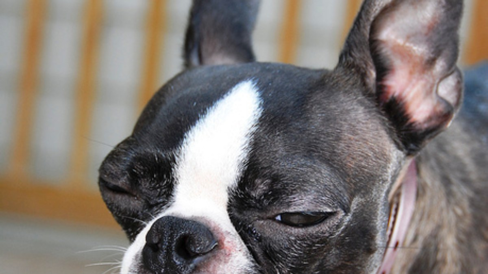

Chó nôn sau khi đi Spa: nguyên nhân và cách xử lý an toàn
Trả lời nhanh: nếu chó chỉ nôn một lần sau buổi Spa nhưng vẫn tỉnh táo, thở bình thường và không có dấu hiệu bất thường khác, bạn có thể theo dõi sát. Tuy nhiên, “vừa đi Spa về” chỉ là mốc thời gian, không chứng minh Spa là nguyên nhân. Nôn lặp lại, nôn ra máu, đau hoặc chướng bụng, cố nôn nhưng không ra, lừ đừ, khó thở, nghi nuốt dị vật/độc chất hoặc không giữ được nước là các tình huống cần liên hệ bác sĩ thú y sớm hoặc cấp cứu.

Chó nôn sau khi đi Spa có nguy hiểm không?
Mức độ đáng lo phụ thuộc vào số lần nôn, tình trạng toàn thân và dấu hiệu đi kèm. Một lần nôn đơn lẻ có thể xuất hiện trong nhiều tình huống khác nhau. Ngược lại, nôn nhiều lần, đau bụng, lừ đừ, có máu hoặc không giữ được nước có thể liên quan vấn đề nghiêm trọng hơn và không nên tự quy về “stress sau grooming”.
PetMD lưu ý nguyên nhân nôn ở chó rất rộng, từ rối loạn tiêu hóa nhẹ đến dị vật, độc chất, viêm tụy hoặc giãn-xoắn dạ dày. Vì vậy, nếu triệu chứng xuất hiện sau Spa, cách an toàn là ghi nhận thời điểm nhưng vẫn đánh giá như một triệu chứng y khoa độc lập.
5 nhóm nguyên nhân có thể khiến chó nôn sau buổi Spa
1. Căng thẳng hoặc kích thích trong ngày
Một số chó nhạy với thay đổi môi trường, tiếng động hoặc việc được giữ để grooming. Stress có thể đi cùng buồn nôn ở một số trường hợp, nhưng không nên dùng stress để giải thích mọi lần nôn. Nếu nôn lặp lại hoặc chó có vẻ đau, cần tìm nguyên nhân khác.
2. Ăn quá nhanh hoặc ăn sát thời điểm di chuyển
Chó ăn nhanh, uống nhiều nước một lúc hoặc vận động/di chuyển ngay sau bữa có thể khó chịu tiêu hóa. Khi đặt lịch, bạn nên báo giờ ăn gần nhất và thói quen dễ say xe nếu có.
3. Say xe trên đường đi hoặc về
Nếu chó thường chảy dãi, bồn chồn, liếm mép hoặc nôn khi đi ô tô/xe máy, thời điểm nôn sau Spa có thể trùng với chuyến di chuyển. Ghi lại lúc triệu chứng bắt đầu giúp bác sĩ thú y phân biệt tốt hơn.
4. Vấn đề tiêu hóa không liên quan buổi Spa
Thay đổi thức ăn, ăn đồ lạ, viêm đường tiêu hóa, ký sinh trùng và nhiều bệnh lý khác có thể gây nôn. Hãy nhớ lại 24 giờ trước đó: chó đã ăn gì, có lục rác, gặm đồ chơi hoặc được cho món mới hay không.
5. Dị vật, độc chất hoặc tình trạng cấp cứu
Nếu nghi chó nuốt vật lạ hoặc tiếp xúc chất độc, không chờ xem có tự hết không. Tương tự, cố nôn nhiều lần nhưng không ra kèm bụng chướng, đau hoặc bồn chồn có thể là dấu hiệu cấp cứu cần bác sĩ thú y ngay.
Phân biệt chó nôn và trớ sau khi đi Spa
Nôn thường là quá trình chủ động: chó có thể buồn nôn, chảy dãi, co bụng hoặc nôn khan trước khi thức ăn/dịch được đẩy ra. Trớ thường thụ động hơn, thức ăn hoặc dịch đi lên mà không có co bóp bụng rõ. Việc phân biệt này hữu ích vì nguyên nhân và cách đánh giá khác nhau.
Nếu không chắc, hãy quay video nếu tình trạng tái diễn và chụp ảnh chất nôn. Đừng cố gây nôn thêm hoặc cho thuốc chống nôn của người khi chưa có hướng dẫn thú y.
Nên làm gì khi chó nôn sau khi đi Spa?
Bước 1: Cho chó nghỉ ở nơi yên tĩnh
Đưa bé về khu vực thoáng, ít kích thích. Quan sát mức tỉnh táo, nhịp thở, tư thế và xem bụng có căng bất thường hay không.
Bước 2: Ghi lại số lần và đặc điểm chất nôn
Ghi giờ nôn, số lần, màu sắc, có thức ăn, dịch vàng, bọt hay máu. Thông tin này hữu ích hơn việc chỉ nói “bé nôn sau Spa”.
Bước 3: Không ép ăn hoặc cho uống quá nhiều một lúc
Sau khi nôn, không nên ép chó ăn ngay. Nếu chó tỉnh táo và không có dấu hiệu cấp cứu, có thể cho tiếp cận lượng nước nhỏ, theo dõi khả năng giữ nước và gọi bác sĩ thú y nếu nôn tiếp. Với chó con, chó già hoặc chó có bệnh nền, ngưỡng liên hệ bác sĩ nên thấp hơn.
Bước 4: Không tự dùng thuốc của người
Thuốc chống nôn, giảm đau hoặc thuốc dạ dày của người không nên tự cho chó dùng. Điều trị phụ thuộc nguyên nhân và có những tình huống cần loại trừ tắc nghẽn hoặc độc chất trước.
Khi nào chó nôn cần bác sĩ thú y hoặc cấp cứu?
Hãy liên hệ bác sĩ thú y ngay nếu chó nôn ra máu, nôn liên tục hoặc tăng dần, cố nôn nhưng không ra, bụng chướng/đau, lừ đừ hoặc suy yếu, khó thở, nghi ăn độc chất hay nuốt dị vật, hoặc không giữ được nước. PetMD cũng xem nôn ra máu và các dấu hiệu gợi ý giãn-xoắn dạ dày là tình huống cần chăm sóc khẩn.
Chó con, chó lớn tuổi hoặc bé có bệnh nền có thể mất nước và xấu đi nhanh hơn. Nếu bạn thấy trạng thái của bé khác hẳn bình thường, ưu tiên gọi cơ sở thú y thay vì chờ đủ một khoảng thời gian cố định.
Chuẩn bị gì trước buổi Spa để dễ theo dõi sức khỏe?
Khi đặt lịch Spa, hãy báo tuổi, giống, cân nặng gần nhất, bệnh nền, thuốc đang dùng, tiền sử say xe hoặc nôn khi căng thẳng và giờ ăn gần nhất. Nếu chó đang nôn, tiêu chảy, lừ đừ hoặc có dấu hiệu bệnh trước lịch hẹn, nên trao đổi trước thay vì đưa bé đi grooming như bình thường.
Bạn có thể xem thêm checklist trước khi đặt lịch Spa và bài chó mệt sau khi đi Spa. Nếu cần chọn dịch vụ, xem Spa thú cưng Bình Thạnh và Grooming chó mèo.
Câu hỏi thường gặp
Chó nôn một lần sau Spa có cần đi khám ngay không?
Nếu chỉ một lần và chó vẫn tỉnh táo, thở bình thường, không đau bụng và không có dấu hiệu khác, có thể theo dõi sát. Nếu nôn tái diễn hoặc xuất hiện dấu hiệu cảnh báo, hãy gọi bác sĩ thú y.
Nôn sau Spa có phải do shampoo?
Không thể kết luận chỉ từ thời điểm. Nôn có nhiều nguyên nhân. Nếu nghi chó đã liếm hoặc nuốt một sản phẩm, hãy cung cấp tên sản phẩm và thành phần cho bác sĩ thú y để được hướng dẫn.
Có nên cho chó ăn ngay sau khi nôn?
Không nên ép ăn ngay. Cách cho ăn lại phụ thuộc tuổi, kích thước, bệnh nền và mức độ nôn; nếu có bất kỳ dấu hiệu đáng lo nào, hãy hỏi bác sĩ thú y trước.
Cần đặt lịch Spa/Grooming cho bé?
Hãy báo trước tình trạng sức khỏe, giờ ăn, tiền sử say xe hoặc phản ứng với grooming để việc bàn giao rõ ràng hơn.
Bài liên quan
- Chó mệt sau khi đi Spa có bình thường không?
- Chó run sau khi tắm: nguyên nhân và cách xử lý
- Chó hắt hơi sau khi tắm: khi nào cần lo?
- Checklist trước khi đặt lịch Spa chó mèo
Lưu ý: nội dung mang tính giáo dục, không thay thế chẩn đoán hoặc điều trị của bác sĩ thú y.